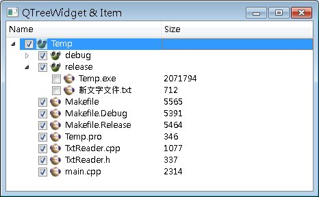

QTreeWidget類別提供樹狀的列示元件，可以顯示多欄與樹狀結構，它與QTreeWidgetItem一同使用，使用
QTreeWidget時欄位標題題或是欄位名稱是使用QStringList來設定，例如：
// 設定欄位名稱
QStringList columnTitle;
columnTitle.append("Name");
columnTitle.append("Size");
treeWidget->setHeaderLabels(columnTitle);
這個程式片段會設定兩欄的欄位標題，分別為Name與Size名稱，QTreeWidget要設定一個頂層的QTreeWidgetItem：
QTreeWidgetItem *dir = new QTreeWidgetItem(fileColumn);
dir->setIcon(0, QIcon("caterpillar_head.jpg"));
dir->setCheckState(0, Qt::Checked); // 設定顯示可核取的方塊
treeWidget->addTopLevelItem(dir);
setCheckState()方法設定QTreeWidgetItem出現可核取的方塊。QTreeWidget中每個樹狀子節點則為每個QTreeWidgetItem的子元件，例如：
QStringList fileColumn;
fileColumn.append(fileInfo.fileName());
QTreeWidgetItem *child = new QTreeWidgetItem(fileColumn);
child->setIcon(0, QIcon("caterpillar_head.jpg"));
parentWidgetItem->addChild(child);
以上為QTreeWidget與QTreeWidgetItem的基本使用方式。下面這個程式將結合之後會介紹的 QFileInfo與QDir 類別，使用遞迴查詢出指定目錄下的
所有目錄與檔案，但不包括隱藏檔與符號連結，查詢的結果將分為目錄與檔案，並使用QTreeWidget類別的樹狀結構加以顯示，目前您只要先注意QTreeWidget與QTreeWidgetItem的使用方式，QFileInfo類別與QDir類別之後將會介紹：
#include <QApplication>
#include <QTreeWidget>
#include <QTreeWidgetItem>
#include <QStringList>
#include <QFile>
#include <QFileInfo>
#include <QDir>
void listFile(QTreeWidgetItem *, QFileInfo &);
int main(int argc, char *argv[]) {
QApplication app(argc, argv);
QTreeWidget *treeWidget = new QTreeWidget;
treeWidget->setWindowTitle("QTreeWidget & Item");
treeWidget->resize(400, 250);
// 設定欄位名稱
QStringList columnTitle;
columnTitle.append("Name");
columnTitle.append("Size");
treeWidget->setHeaderLabels(columnTitle);
// 查詢的目錄
QFileInfo fileInfo("D:\\Temp");
QStringList fileColumn;
fileColumn.append(fileInfo.fileName());
QTreeWidgetItem *dir = new QTreeWidgetItem(fileColumn);
dir->setIcon(0, QIcon("caterpillar_head.jpg"));
dir->setCheckState(0, Qt::Checked); // 設定可核取的方塊
treeWidget->addTopLevelItem(dir);
// 查詢目錄
listFile(dir, fileInfo);
treeWidget->show();
return app.exec();
}
void listFile(QTreeWidgetItem *parentWidgetItem, QFileInfo &parent) {
QDir dir;
dir.setPath(parent.filePath());
dir.setFilter(QDir::Files | QDir::Dirs | QDir::NoSymLinks);
dir.setSorting(QDir::DirsFirst | QDir::Name);
const QFileInfoList fileList = dir.entryInfoList();
for (int i = 0; i < fileList.size(); i++) {
QFileInfo fileInfo = fileList.at(i);
QStringList fileColumn;
fileColumn.append(fileInfo.fileName());
if (fileInfo.fileName() == "." || fileInfo.fileName() == ".." ); // nothing
else if(fileInfo.isDir()) {
QTreeWidgetItem *child = new QTreeWidgetItem(fileColumn);
child->setIcon(0, QIcon("caterpillar_head.jpg"));
child->setCheckState(0, Qt::Checked);
parentWidgetItem->addChild(child);
// 查詢子目錄
listFile(child, fileInfo);
}
else {
fileColumn.append(QString::number(fileInfo.size()));
QTreeWidgetItem *child = new QTreeWidgetItem(fileColumn);
child->setIcon(0, QIcon("momor_head.jpg"));
child->setCheckState(0, Qt::Checked);
parentWidgetItem->addChild(child);
}
}
}
程式中直接設定顯示D:\Temp下的所有目錄與檔案，一個執行的結果畫面如下所示：

|
|